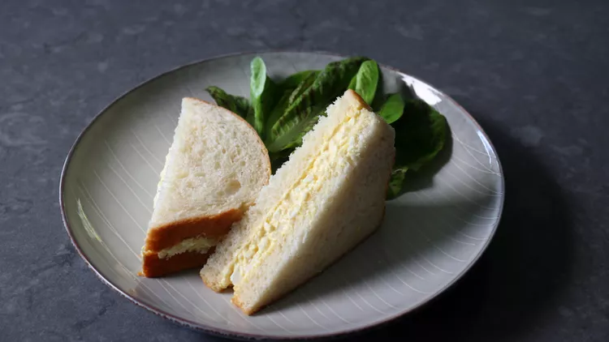

Japanese egg sandwich

Japanese Egg Salad Sandwich (Tamago Sando). Photo: Chef John
Ingredients
- 4 large egg
- ½ cup mayonnaise
- ¼ teaspoon kosher salt
- ¾ teaspoon white sugar
- 1 teaspoon Dijon mustard
- 3 dashes hot sauce, or to taste
- 1 teaspoon freshly squeezed lemon juice
- 2 teaspoons rice vinegar
Step
- Place eggs in the bottom of a saucepan.
Add 1/4 inch of water.
Heat over medium-high heat and bring to a boil.
Cover and steam for 11 minutes. Turn off the heat and drain water carefully;
pour cold water over and let cool.
- Mix mayonnaise, salt, sugar, mustard, hot sauce, lemon juice, and vinegar for Kewpie-style mayonnaise together.
Cover with plastic wrap and refrigerate until needed.
- Peel eggs. Mash in a shallow bowl with the side and back of a fork until desired texture is reached.
Add salt, sugar, cayenne, heavy cream, and 3 tablespoons Kewpie-style mayonnaise.
Stir to combine. Wrap and refrigerate until well chilled, at least 1 hour.
Taste and adjust seasonings.
- Butter bread slices and use 1/2 of the egg salad on each sandwich.
Cut crusts off before serving if you're fancy